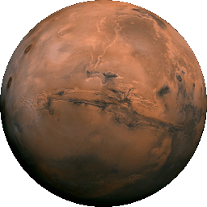
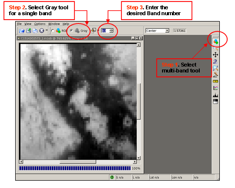
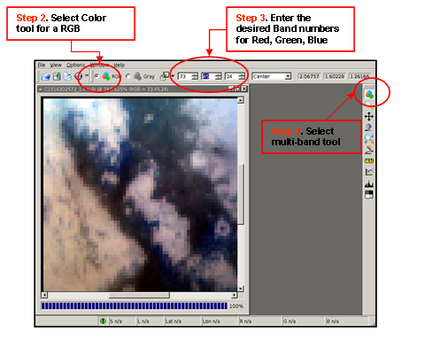

Introduction to ISIS ¶
- Introduction to ISIS
What is ISIS3? ¶
ISIS3 is an image processing software package. The focus of the software is to manipulate imagery collected by current and past NASA planetary missions sent to Mars, Jupiter, Saturn, and other solar system bodies.
If you're familiar with commercial image processing packages (for example: Adobe Photoshop, PaintShop Pro, Envi, or ERDAS Imagine) you'll recognize many of the standard image processing operations ISIS3 is capable of, such as contrast stretch, image algebra, filters, and statistical analysis.
However, the real power of ISIS3 is its unique capabilities for processing data from NASA spacecraft missions such as Voyager, Viking, Galileo, Mars Global Surveyor, and Mars Odyssey. ISIS3 is able to import raw mission data into a usable geospatial image product, and has tools for digital mosaicking of adjacent images, photometric modeling and normalization, removal of systematic noise patterns, overlaying graticules, and numerous other cartographic and scientific analysis functions.
The following are just a few examples of how the USGS Astrogeology Research Program has used ISIS3 in our work (links open in a new window):
- Global mosaics : mosaicking hundreds or thousands of images collected by space exploration missions to create seamless, cartographically accurate, global image maps for use by the planetary science community for research and mapping. See our Map-a-Planet site to view these products.

This famous mosaic of the Valles Marineris hemisphere of Mars was created using ISIS3. The mosaic is composed of 102 Viking Orbiter images of Mars, and is projected into point perspective, a view similar to that which one would see from a spacecraft at a distance of 2500 kilometers from the surface of the planet.
-
Geologic Mapping : we create accurate base image maps for geologists to use in creating geologic maps. See our Planetary Geologic Mapping Program for more information about this work.
-
Scientific Research : Using ISIS3 to mosaic images of a region of interest to create a scientifically accurate image product, and analyzing the imagery based on spectral, textural, or other attributes. See the following Science Magazine abstract for examples of images from the Mars Exploration Rover Mission Microscopic Image that were processed and analyzed using ISIS3 as part of the scientific research resulting from the mission: Textures of the Soils and Rocks at Gusev Crater from Spirit's Microscopic Imager .
Getting Started ¶
To run ISIS3 applications, two things must happen. First, the ISIS3 software has to be installed. The installation procedure will change from time to time so please see the ISIS Download and Installation Guide for the most recent instructions. Second, your environment must be setup so you can execute ISIS3 applications. To set your environment up correctly you should first find out where ISIS3 has been installed. The default location is /usgs/pkgs/isis3/isis .
The setup process will modify your environment:
- The environment variables PATH and LD_LIBRARY_PATH will be modified to include the ISIS3 directories
- If not already defined, the environment variable ISISROOT will be set to its default value
The setup for ISIS3 on a "Unix" type system depends on which shell you work under. Follow the instructions below for your shell.
Setup for Linux/Unix ¶
C Shell ¶
If you are using C Shell (i.e. csh) or some variant (such as tcsh):
Step 1
: If ISIS3 is installed in the default location (/usgs/pkgs/isis3/isis) go to step 2.
If ISIS3 is not installed in the default location you need to set the environment variable ISISROOT.
On the command line use setenv to set the ISISROOT variable to the proper location
(replace the x's and y's with the complete path to where ISIS3 is installed):
setenv ISISROOT /xxxxx/yyyyy/isis
Step 2 : Use the source command to execute the ISIS3 startup script:
source /xxxxx/yyyyy/isis/scripts/isis3Startup.csh
If you want ISIS3 to be initialized when you login, place the above commands in your .cshrc file.
Bourne Shell ¶
If you are using the Bourne shell (i.e. sh) or one of its variants (bash, ksh):
Step 1
: If ISIS3 is installed in the default location (/usgs/pkgs/isis3/isis) go to step 2.
If ISIS3 is not installed in the default location you need to set the environment variable ISISROOT.
On the command line set ISISROOT to the proper location and export the variable using:
ISISROOT=/xxxxx/yyyyy/isis export ISISROOT
Step 2 : Use the .(dot) command to execute the ISIS3 startup script:
. /xxxxx/yyyyy/isis/scripts/isis3Startup.sh isis3
If you want ISIS3 to be initialized when you login, place the above commands in your .profile file.
For those of you who need to work in both version 2 and 3 of ISIS, we suggest you keep them separate by having different terminal windows for each instance. For example, have one xterm with the environment set for version 2 and another set for version 3.
Getting Help ¶
The ISIS Support Center is our online knowledge base, bug tracking, announcements, and user support center. If you need help, want to get the latest news, find out about the status of a bug (i.e. software glitch), or just want to learn more and interact with other ISIS3 users, the ISIS Support Center is the place to go! The ISIS Support Center provides access to help on ISIS3.
{kind=link}
Here, you can search for questions, tickets and bug reports from other ISIS3 users and the ISIS Support Team -- a post about your subject may already have been answered. If you can't find what you are looking for, you can register for a user name and then submit your question as a Question issue. Please read the Guidelines page before registering.
To participate in discussions or post issues, it is important that you follow the Guidelines for Reporting Issues .
User Interface for ISIS3 ¶
ISIS3 programs fall into two main groups: interactive and non-interactive. Interactive programs allow you to observe the results of actions you take almost immediately. The main interactive program is qview , the image display program for ISIS3. However, most programs in ISIS3 fall into the non-interactive group. These programs process the data you supply, usually one or more image files, and write the results to a new file. Some examples are lowpass , ratio and moc2isis . At this point we will concentrate on the user interface for non-interactive programs because their interfaces are all similar. Interactive programs are somewhat unique, so they each have their own documentation.
{kind=link}
qview , ISIS3's image display application, is an interactive application]]
All ISIS3 programs are launched via the command line. The command line refers to the text typed at the prompt of a terminal window such as xterm, console, or putty, or in a script like cshell, or perl. ISIS3 programs are started by typing the name of the program followed by any arguments. All arguments must be separated from each other by at least one space.
Command line arguments are broken into two categories, reserved, and parameter. Reserved arguments always begin with a dash (-) and change major things about how the program runs while parameter arguments supply data to the application and control how it processes that input data to create output data.
Reserved Command Line Arguments ¶
Reserved arguments all begin with a dash (-), and are not sensitive to case (i.e., -help is the same as -HElp). A list of basic reserved arguments includes:
- -webhelp Launch a web browser showing the ISIS3 help page for that program. All other arguments will be ignored.
- -help Display a list of the program's parameters showing their default values. For example:
> equalizer -help FROMLIST = Null HOLDLIST = Null TOLIST = Null OUTSTATS = NULL INSTATS = NULL PROCESS = (*BOTH, CALCULATE, APPLY) SOLVEMETHOD = (QRD, *SPARSE) ADJUST = (*BOTH, BRIGHTNESS, CONTRAST, GAIN) MINCOUNT = 1000 WEIGHT = FALSE PERCENT = 100.0
- -last Run the program using the same parameter arguments from the most recent time the program was run. This does not include any reserved arguments.
- -restore=filename Run the program using the arguments from the file specified in filename.
Reserved arguments come in two forms, solitary keyword or keyword value pair. Solitary keywords tell the program to perform some special action such as the -help keyword above. Keyword value pairs also tell the program to perform some special action, but use additional information for that action like in the -restore argument above. The keyword and value must be separated from each other with an equals sign (=). The equals sign may have spaces on either or both sides of it.
Parameter Command Line Arguments ¶
Parameter arguments are always made up of keyword value pairs. The keyword and value are separated by an equals sign just like reserved arguments, but they begin with an alphabetic letter instead of a dash. Parameters control what input data to use, what settings to use to process that input data, and where to put the output data. There are six different types of parameters:
- Cube file names - A cube file name is the location on disk of an ISIS3 cube. It can be either the input to this program or where to place the output. Input cubes, must be the output from some other ISIS3 program. Most programs can process cubes from ISIS2, but some information may be interpreted differently. Output cubes, will always be the location to place processed results from the application. When entering the filename of a cube it is not necessary to enter the .cub extension. It will be added for you if you do not type it.
from=r0700563_lev1.cub to= f431a62
- Data file names - A data file name is the location on disk of a file which is not an ISIS3 cube. This includes input files from missions such as Mars Global Surveyor or Viking, and output files such as that produced by the program stats or isis2std .
to=myStatistic.dat
- Floating point numbers - Floating point numbers are numeric values with a whole part and/or a fractional part. Parameters with this type can be given values like 1.0, 0.7823, 127 or 0.31416E+1
radius=317.681
- Integers - Integer numbers have only a whole part. Parameters of this type can be given values like 0, 2, -18223 or 255.
lines=1024
- Boolean - Boolean parameters are used as flags to indicate true or false. The ISIS3 user interface allows true values to be represented by True, T, Yes or Y. False values can be False, F, No or N. Any mixture of upper and lower case letters is allowed. The name of the parameter for boolean's is usually a question such as USEDEM. This should be read as "Do you want the program to use a DEM when it processes the input?"
CREATESPECIAL=FALSE emission=true
- String - A string is a simple sequence of printable characters. For example "MARS", "BiLinear" or "The quick brown fox."
bittype=real
Application Running Modes ¶
All non-interactive programs can run in one of two modes, text mode (runs without launching a window) or graphical mode (launches a window for providing parameters). Which mode the program runs in depends on what arguments you supplied on the command line. If any parameter arguments are present on the command line, the program will run in text mode unless explicitly overridden using the reserved argument -gui.
ISIS3 Graphical Mode ¶
To run an ISIS3 program in graphical mode, simply type the name of the program followed by the Enter key. The program will display a window that allows you to set parameters for the program, start/stop running the algorithm on the data, observe the current status of the program, and see any logged information.
As mentioned earlier, if there are any parameter arguments on the command line the program will run in text mode. You can override this feature by supplying the -gui reserved argument on the command line. The gui flag refers to the term Graphical User Interface (or, simply GUI, pronounced ''gooey''), and forces the application to run in graphical mode. The program will then load any parameter arguments and launch the program in graphical mode instead of text mode. The following command will launch the lowpass program in graphical mode with the parameters set according to what was on the command line:
lowpass from=f431a63.cub to=f431a63_lpf3x3.cub lines=3 samples=3 -gui
{kind=link}
lowpass, regular graphical mode
when run with no parameters, lowpass opens in graphical mode to let you fill in the parameters
{kind=link}
lowpass, forced into graphical mode with -gui
here, lowpass was run with parameters, but by using the -gui flag, lowpass opens in graphical mode and automatically fills in values for any parameters you passed it on the command line
As you can see the parameter arguments on the command line were used to set the values for the lowpass application, and the -gui reserved argument caused the program to run in graphical mode instead of in text mode.
ISIS3 Text Mode ¶
For text mode, ISIS3 programs get all their parameters from you via the command line arguments, process the data, and then exit. Programs may or may not show a status message and results on the terminal window. While running, an application that encounters an error will show the error message on the terminal window and then exit. It is then up to you to correct the error and try again.
{kind=link}
lowpass running in text mode
We ran the lowpass application, passing all the parameters along on the command line. Oops! We spelled "samples" wrong, but lowpass gives us a handy error message to let us know what the problem was. We run it again, it shows us its status as it runs, and returns us to the command line prompt when it's finished.
Using qview to View Cubes ¶
Naturally, one of the first things anyone wants to do when they get their hands on image data is look at it! The qview application is the image viewer for ISIS3. qview has a number of tools to let you zoom in and out, change the contrast, choose color combinations, compare, and otherwise interact with and look at your images. We'll talk about some of these tools in detail later. For now, let's just learn how to open an image in qview .
-
Run qview by typing qview on the command line. The qview viewer application window will open.
-
Select Open... from the File menu. A dialog box labeled "Open" will appear. Images in the native ISIS3 format are called ISIS3 cubes or simply cubes.
- Find the directory containing your ISIS3 cubes
- Select one or more to open
- Click the Open button
-
Your image(s) will appear in the qview window!
Load and Display a Multi-Band Cube ¶
qview will load an entire multi-band cube into memory.
Display Single Band in Black and White ¶
Each band can be selected to view as follows:

Display a Red, Green, Blue Color Composite ¶

Bonus ¶
Now that you know how to run ISIS3 programs go experiment with some of the basic ones like stats , hist or mirror .
Download the ISIS3 cube Intro2isis.cub.gz - the cube is compressed in a GZIP archive file. Use gunzip to uncompress the cube. The filename of the cube is Intro2isis.cub.
Run each of the following applications, using intro2isis.cub as your input '(FROM)' file. Try running in both the GUI and command line modes. The following links to application documentation may be helpful:
-
stats : The stats application computes statistics (such as average, mode, minimum, maximum, etc.) for the pixels in a single band. To choose a band other than the default (band 1) in GUI mode, click the arrow to the right of the "From" field and choose "Change attributes..." from the menu. You can then enter a different band number.
-
hist : The hist application creates a tabular representation of the histogram of a single band in a cube. Like stats, the default band is band 1 and can be changed in the file attributes in the GUI.
-
mirror : The mirror application flips a cube from left to right (making an output cube that looks like the mirror-image of the input cube). Make sure your output '(TO)' filename is different than your input '(FROM)' filename!
After running the mirror application, open both the input cube (intro2isis.cub) and output cube in qview to see the results!
{kind=link}
{kind=link}
{kind=link}